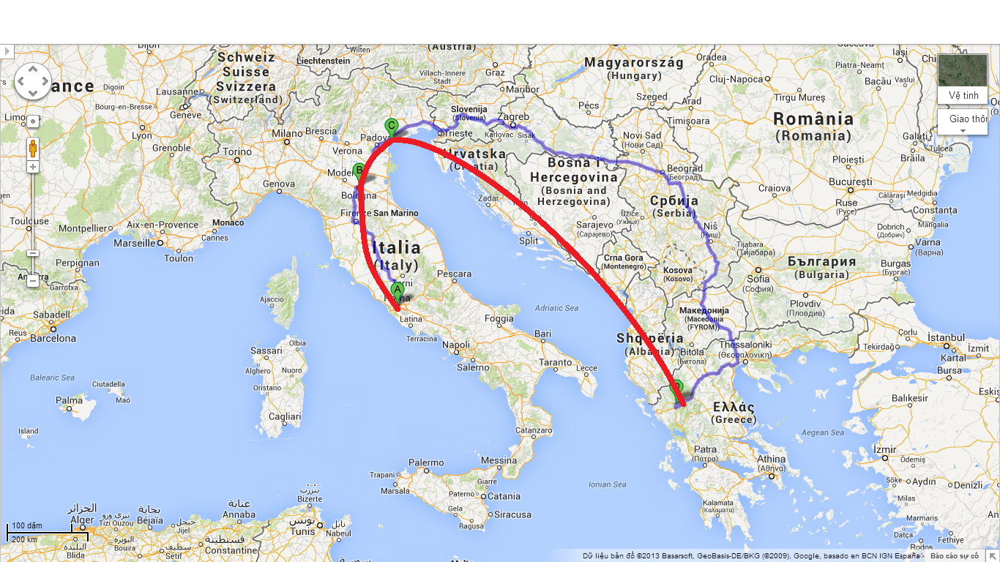

LEO THỨC CẢ ĐÊM ĐÁNH VẬT với nữ thần Athena cao-bốn-mươi-bộ.
Kể từ cái giây phút họ mang được bức tượng lên tàu, Leo đã bị ám ảnh với việc tìm hiểu cơ chế hoạt động của nó. Cậu tin chắc rằng bức tượng có một loại năng lực siêu phàm nào đấy. Chắc chắn phải có một cái công tắc bí mật hay một cái nút bấm hay một cái gì đấy.
Mọi người đề nghị cậu đi ngủ, nhưng đơn giản là Leo không thể. Cậu dành hàng giờ đồng hồ lăn lê bò toài quanh bức tượng, thứ mà giờ đây chiếm gần như toàn bộ khoang sau. Hai bàn chân của Athena bị kẹt trong khoang cứu thương, vì thế, nếu muốn lấy 1 ít thuốc giảm đau, bạn sẽ phải hóp bụng len qua mấy ngón chân khảm ngà voi của bà. Phần thân bức tượng chạy dọc theo mạn trái, còn bàn tay đưa ra của nữ thần thì đâm thẳng vào khoang máy, ‘tiếp thị’ bức tượng Nike-nữ thần chiến thắng to-bằng –người-thật đứng trong lòng bàn tay, như kiểu, Đây, mua một ít Chiến thắng đi! Khuôn mặt trầm lặng của Athena chiếm hết toàn bộ phần sau của chuồng ngựa pegasus, nơi mà, may mắn thay, đang bỏ trống. Nếu Leo mà là một con ngựa thần, cậu sẽ không hề muốn sống trong một cái chuồng với môt bức tượng của nữ thần trí tuệ to quá khổ suốt ngày nhìn mình chằm chằm.
Bức tượng đã được nêm chặt vào mạn tàu, vì thế Leo phải hết trèo lên trên mình, rồi vặn vẹo bên dưới chân tay của nữ thần, để tìm đòn bẩy với cả nút bấm.
Như thường lệ, cậu chẳng tìm được cái gì cả.
Cậu đã nghiên cứu khá kĩ về bức tượng. Nó được làm từ khung gỗ rỗng, được khảm ngà voi và vàng, điều này giải thích cho câu hỏi vì sao nó nhẹ đến thế. Nó có hình dáng rất đẹp, điều này rất đáng xem xét vì nó đã hơn hai ngàn năm tuổi và đã từng bị cướp khỏi Athens, mang về Rome rồi bị cất giữ bí mật trong một cái hang nhện trong suốt hai thiên niên kỉ vừa qua. Chắc hẳn phép thuật đã bảo vệ cho nó nguyên vẹn, Leo hiểu ra, kết hợp với tay nghề thủ công cực tốt.
Annabeth đã nói….ờ, cậu cố không nghĩ về Annabeth. Cậu vẫn cảm thấy tội lỗi khi nghĩ về việc cô và Percy đã rơi xuống Tartarus. Leo biết đây là lỗi của chính cậu. Đáng lẽ cậu phải đảm bảo tất cả mọi người đã an toàn trên tàu trước khi bắt đầu giải cứu bức tượng. Đáng lẽ cậu phải nhận ra rằng sàn của cái hang đó rất yếu.
Mặc dù vậy, đi loanh quanh rầu rĩ sẽ không thể nào cứu Percy và Annabeth về được. Cậu phải tập trung vào việc sửa chữa những rắc rối cậu có thể sử chữa.
Dù sao, Annabeth đã nói rằng bức tượng chính là chìa khóa trong việc đánh bại Gaia. Nó có thể hàn gắn mốt quan hệ sứt mẻ giữa các á thần La Mã và Hy Lạp. Leo nhận ra rằng bức tượng phải có cái gì đó nhiều hơn là tính tượng trưng. Có thể là đôi mắt Athena có thể bắn ra tia la-de, hay con rắn đằng sau cái khiên của bà có thể phun ra nọc độc. Hoặc có thể bức tượng Nike nhỏ hơn có thể sống dậy và đi một vài miếng võ ninja.
Leo có thể nghĩ ra mọi loại trò vui bức tượng có thể làm nếu cậu là người thiết kế, nhưng càng nghiên cứu, cậu lại càng thấy thất vọng. Bức tượng Athena Parthenos phát ra phép thuật. Đến cả cậu cũng có thể nhận ra điều đó. Nhưng xem ra nó chẳng làm được cái nước non gì, ngoài việc trông rất ấn tượng.
Con tàu lao đi lệch sang một bên, làm một thao tác né tránh. Leo cưỡng lại thôi thúc muốn chạy lên chỗ bánh lái. Bây giờ Jason, Piper và Frank đang trực cùng với Hazel. Họ có thể xử lí bất kì chuyện gì đang xảy ra. Hơn nữa, Hazel đã khăng khăng cầm lái để đưa họ qua con đường bí mật mà nữ thần ma thuật đã chỉ cho họ.
Leo hy vọng rằng Hazel đúng về con đường vòng lên Bắc. Cậu không tin quí bà Hecate này. Cậu không thể hiểu được vì cái lí do gì mà một vị nữ thần rùng rợn đấy lại đột nhiên quyết định giúp họ.
Tất nhiên là về cơ bản, cậu không tin vào ma thuật. Đấy là lí do mà cậu có quá nhiều khó khăn với bức tượng Athena Parthenos như vậy. Bức tượng không có một cái khớp động nào cả. Không một bộ phận nào xê dịch. Cho dù nó có thể làm gì, có lẽ nó phải được điều khiển bằng một kĩ năng ma thuật … và Leo chẳng hề cảm kích điều đó. Cậu muốn nó phải có lí, như kiểu máy móc ấy.
Cuối cùng cậu trở nên quá kiệt sức để suy nghĩ rành mạch. Cậu cuộn tròn với một cái chăn trong khoang máy và nghe tiếng vo vo nhẹ nhàng của mấy cái máy phát điện. Cái bàn máy Buford đứng trong góc tường trong chế độ ngủ, phát ra mấy tiếng ngáy hơi nước nho nhỏ: Shhh, pfft, shh, pfft.
Leo thích cabin của mình, nó ổn, nhưng cậu cảm thấy an toàn nhất ở đây, trái tim của con tàu – trong một căn phòng chứa đầy các loại máy móc mà cậu biết cách điều khiển. Thêm nữa, có thể nếu cậu dành nhiều thời gian ở bên bức tượng Athena Parthenos, cậu sẽ khám phá ra bí mật của nó.
‘Là bà hoặc là tôi, Quý Bà Khổng Lồ ạ,’ cậu lẩm bẩm trong lúc kéo chăn lên đến tận cằm. ‘Cuối cùng bà cũng sẽ phải hợp tác với tôi thôi.’
Rồi cậu nhắm măt lại và ngủ. Nhưng không may, thế có nghĩa là mơ.
Cậu đang chạy thục mạng trong xưởng cũ của mẹ, nơi bà đã chết trong đám cháy lúc Leo lên tám.
Cậu không chắc cái gì đang đuổi theo mình, nhưng cậu biết nó đang đến gần, rất nhanh. Một thứ gì đó to lớn, đen tối và chứa đầy thù hận.
Cậu trượt chân ngã vào mấy cái bàn thợ, đấm văng mấy cái hộp dụng cụ và trượt trên đống dây điện. Cậu phát hiện ra lối ra và lao vè phía đó, nhưng có một hình thù lờ mờ hiện ra phía trước cậu – một người phụ nữ mặc áo choàng làm bằng đất chuyển động liên tục, mặt bà ta che một tấm voan từ bụi.
Ngươi đang đi đâu đấy, người anh hùng bé nhỏ? Gaia hỏi Đứng lại gặp đứa con trai cưng của ta đi nào.
Leo vọt về phía bên trái, nhưng tiếng cười của nữ thần Mặt Đất vẫn đuổi theo cậu.
Cái đêm mẹ ngươi chết, ta đã cảnh báo ngươi. Ta đã nói rằng ba nữ thần Số Mệnh không cho ta giết ngươi ngay tức khắc. Nhưng giờ đây, ngươi đã chọn con đường của mình. Cái chết của ngươi gần lắm rồi đấy, Leo Valdez.
Leo bắt gặp một cái bàn vẽ – phòng làm việc cũ của mẹ cậu. Bức tường đằng cái bàn được trang trí bằng các bức tranh vẽ bằng màu sáp của Leo. Leo bật khóc nức nở một cách tuyệt vọng rồi quay đi, nhưng cái đang đuổi theo cậu đã chắn trước cậu – một cái bóng khổng lồ khuất trong bóng tối, có hình thù mơ hồ giống người, đầu của nó gần chạm đến trần nhà cao hơn 6 mét.
Tay Leo bùng lên ngọn lửa. Cậu phóng lửa vào người khổng lồ, nhưng bóng tối nuốt chửng lửa của cậu. Leo sờ xuống thắt lưng, và phát hiện ra những cái túi trên chiếc thắt lưng ma thuật của cậu đã bị khâu kín. Cậu cố lên tiếng – cố nói gì đấy có thể cứu cái mạng cậu – nhưng cậu không thể phát ra một âm thanh nào, cứ như là toàn bộ không khí trong phổi câu đã mất sạch.
Tối nay con trai ta không cho phép một đốm lửa nào cả, Gaia nói từ sâu thẳm nhà kho. Hắn là khoảng không có thể hấp thụ mọi phép thuật, là cái giá lạnh có thể cuốn đi mọi ngọn lửa, là sự câm lặng có thể làm bặt tăm mọi lời nói..
Leo muốn hét lên: Còn tôi là thằng cha có thể chuồn khỏi chỗ này!
Cậu vẫn không nói được, nên chuyển sang dùng chân. Cậu lao sang phải, chuồi qua bên dưới cánh tay tham lam của gã khổng lồ, và xộc qua lối cánh cửa gần nhất.
Đột nhiien, cậu thấy mình đang ở Trại Con Lai, trừ việc trại chỉ còn là một đống đổ nát. Các cabin đã cháy thành tro. Các cánh đồng âm ỉ khói dưới ánh trăng. Nhà bạt ăn tối đã sập xuống một đống sỏi trắng. Và Nhà Lớn thì đang bốc cháy, các cửa sổ củ nó rực lên như mắt quỷ.
Leo cắm đầu chạy, tin chắc rằng cái bóng khổng lồ vẫn đuổi theo sau.
Cậu chạy qua lại quanh những cái xác của các á thần Hy Lạp và La Mã. Cậu muốn kiểm tra xem họ còn sống không. Cậu muốn giúp họ. Nhưng bằng một cách nào đó, cậu biết rằng cậu sắp hết thời gian.
Cậu chạy đến chỗ có người sống duy nhất mà cậu thấy – một nhóm người La Mã đứng ở bãi chơi bóng chuyền. Hai đại đội trưởng bình thản tựa trên hai cái lao của họ, nói chuyện với một cậu con trai cao gầy, tóc vàng mặc toga tím. Leo lạng choạng. Đó chính là tên Octavian kì quặc, thầy pháp ở trại Jupiter, kẻ luôn luôn kêu gọi chiến tranh.
Octavian quay lại nhìn cậu, nhưng hắn trông đơ đơ. Mặt hắn xệ xuống, mắt thì nhắm. Khi hắn cất tiếng, hắn nói ra giọng của Gaia: Điều này là không thể ngăn chặn. Người La Mã đã từ New York đông tiến. Họ đang tiến đến trại của ngươi, và không gì có thể làm chậm bước tiến của họ.
Leo rất muốn đấm vào mặt Octavian một cái. Nhưng thay vào đó, cậu tiếp tục chạy.
Cậu trèo lên Đồi Con Lai. Trên đỉnh đồi, sét đã đánh cây thông khổng lồ ra thành vụn gỗ.
Leo nao núng, muốn dừng lại. Lưng đồi đã bị cạo mất tăm. Xa hơn, cả thế giới đã biến mất, Leo chẳng nhìn thấy gì ngoài những đám mây trải dài tít tắp – một tấm thảm bằng bạc lăn tròn trên nền trời đen thăm thẳm.
Một giọng nói sắc như dao, ‘Thế nào?’
Leo chùn chân.
Ở chỗ cây thông tơi tả, một người phụ nữ quỳ trước cửa hang nứt ra ở chỗ rễ cây.
Người phụ nữ này không phải là Gaia. Bà ta trông giống phiên bản sống của bức tượng Athena Parthenos hơn, với cái áo choàng bằng vàng y hệt và đôi tay bằng ngà voi để trần. Khi bà ấy trồi lên, Leo suýt nữa thì trượt chân ra khỏi rìa thé giới.
Khuôn mặt bà ta đẹp một cách vương giả, với gò má cao, đôi mắt đen to và mái tóc màu cam thảo được tết thành một bó theo kiểu Hy Lạp đầy sang trọng, được trang trí bằng những viên ngọc lục bảo xoắn ốc và kim cương, gợi cho Leo nhớ đến cây thông Nô-en. Nét mặt của bà ánh lên duy nhất sự thù hận. Môi bà ta cong lên, mũi thì nhăn lại.
‘Con của thần thợ rèn,’ bà ta nhếch mép. ‘ngươi không phải là một mối đe dọa, nhưng ta chắc là công cuộc trả thù của ta phải bắt đầu từ đâu đó. Hãy chọn đi.’
Leo cố nói, nhưng cậu sợ đến rụng rời tay chân. Giữa bà hoàng đầy căm giận và tên khổng lồ đang đuổi theo cậu, cậu không biết phải làm gì cả.
‘Hắn sẽ tới đây sớm thôi.’ Bà ta cảnh báo. ‘Anh bạn đen tối của ta sẽ không cho ngươi thứ xa xỉ gọi là lựa chọn đâu. Xuống vực hay vào hang đây, cậu bé!’
Đột nhiên Leo hiểu ý bà ta muốn nói gì. Cậu đã bị dồn vào chân tường rồi. Cậu có thể nhảy ra khỏi vách đá, nhưng thế nghĩa là tự sát. Thậm chí nếu có tồn tại một mặt đất nào đấy bên dưới những đám mây kia, cậu có thể chết do cú rơi, hoặc có thể cậu sẽ cứ rơi mãi mãi.
Nhưng cái hang … Cậu nhìn chằm chằm vào cái khoảng tối đen giữa hai cái rễ cây. Nó có mùi như mùi mục rữa và cái chết. Cậu nghe thất tiếng những cái xác bò lồm cồm lên nhau, những tiếng thì thầm trong bóng tối.
Cái hang này là ngôi nhà của người chết. Nếu đi xuống đó, cậu sẽ không bao giờ đi lên.
‘Đúng đấy,’ người đàn bà nói. Quang cổ bà ta lag một sợi dây chuyền có mặt bằng đồng và ngọc bích trông rất lạ, cứ như một cái mê cung xoáy. Mắt bà ta chứa đầy sự dận giữ. Leo cuối cùng cũng hiểu ra vì sao trong từ ‘ điên tiết’ lại có chữ ‘điên’ (nguyên bản: Leo finally understood why mad was a word for crazy). Quý bà này đã phát điên vì thù hận. ‘Ngôi nhà thần Hades đang đợi đấy. Ngươi sẽ là con chuột yếu ớt đầu tiên chết trong mê cung của ta. Ngươi chỉ có một cơ hội duy nhất để thoát thôi, Leo Valdez. Chọn đi.’
Bà ta chỉ về hướng vách đá.
‘Bà là mụ khùng,’ cậu quyết định nói.
Đó là một câu nói sai lầm. Bà ta túm lấy cổ tay cậu. ‘Hay là ta giết ngươi luôn bây giờ, trước khi người bạn của bóng tối của ta đến đây?’
Những bước chân làm rúng điịng cả quả đồi. Tên khổng lồ đang đến, được bao bọc bởi bóng tối, to lớn, nặng nề và quyết tâm giết cậu.
‘Ngươi đã bao giờ nghe đến chuyện chế trong giấc mơ chưa, thằng nhóc?’ Người phụ nữ hỏi. ‘Điều đấy là có thể đấy, nếu có một pháp sư ra tay!’
Cánh tay của Leo bắt đầu bốc khói. Cái chạm của bà ta bỏng như acid. Cậu cố vùng ra, nhưng bàn tay nắm chặt bà ta cứ trơ trơ như thép nguội.
Cậu mở mồm ra hét. Cái bóng khổng lồ trùm lên cậu, bọc cậu trong lớp khói đen đặc.
Tên khổng lồ đã giơ nắm đấm len, nhưng một giọng nói cắt ngang qua giấc mơ.
‘Leo!’ Jason đang lắc vai cậu. ‘Ê, ông bạn, tại sao cậu lại ôm Nike?’
Leo chớp chớp mắt. ai tay cậu đang vòng quanh bức tượng to-bằng-người-thật trong tay Athena. Chắc chắn là cậu đã lăn lộn lung tung trong khi ngủ. Cậu đã ôm chặt nữ thần chiến thắng y như cậu hay ôm gối ôm hồi bé mỗi khi gặp ác mộng. (Trời ạ, điều này quả thực rất là xấu hổ trong các nhà nhận nuôi tạm thời[1].)
Cậu gỡ tay ra rồi ngồi dậy, dụi mặt.
‘Không có gì đâu,’ cậu lẩm bẩm. ‘Bọn mình ôm ấp tí thôi mà. Ừm, mà chuyện gì thế?’
Jason không bao giờ trêu cậu. Đó là điều Leo luôn trân trọng ở cậu bạn này. Đôi mắt xanh băng của Jason trông lặng lẽ và nghiêm trọng. Cái sẹo nhỏ trên môi cậu giật giật, giống như mỗi khi cậu chuẩn bị thông báo một tin xấu.
‘Chúng ta đã vượt qua dãy núi,’ cậu ta nói. ‘Chúng ta gần đến Bologna rồi. Cậu nên lên phòng họp cùng mọi người đi. Nico có tin mới.’
